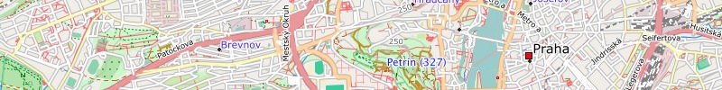
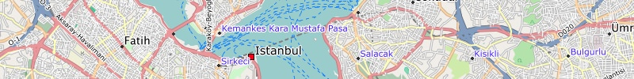

Belgien:
Garmin GPS-Gerät: Belgien - Installationsimage für Micro-SD-Karte (0.2 GB)
Microsoft Windows: Belgien - Installationsarchiv für Garmin BaseCamp (0.2 GB)
Apple Mac OS X: Belgien - Installationsarchiv für Garmin BaseCamp (0.2 GB)
Alle Betriebssysteme: Belgien - Imageverzeichnis für QLandkarte (0.2 GB)

Niederlande:
Garmin GPS-Gerät: Niederlande - Installationsimage für Micro-SD-Karte (0.4 GB)
Microsoft Windows: Niederlande - Installationsarchiv für Garmin BaseCamp (0.4 GB)
Apple Mac OS X: Niederlande - Installationsarchiv für Garmin BaseCamp (0.4 GB)
Alle Betriebssysteme: Niederlande - Imageverzeichnis für QLandkarte (0.4 GB)

Grossbritannien:
Garmin GPS-Gerät: Grossbritannien - Installationsimage für Micro-SD-Karte (0.6 GB)
Microsoft Windows: Grossbritannien - Installationsarchiv für Garmin BaseCamp (0.6 GB)
Apple Mac OS X: Grossbritannien - Installationsarchiv für Garmin BaseCamp (0.6 GB)
Alle Betriebssysteme: Grossbritannien - Imageverzeichnis für QLandkarte (0.6 GB)

Dänemark:
Garmin GPS-Gerät: Dänemark - Installationsimage für Micro-SD-Karte (0.1 GB)Microsoft Windows: Dänemark - Installationsarchiv für Garmin BaseCamp (0.1 GB)
Apple Mac OS X: Dänemark - Installationsarchiv für Garmin BaseCamp (0.1 GB)
Alle Betriebssysteme: Dänemark - Imageverzeichnis für QLandkarte (0.1 GB)

Tschechien:
Garmin GPS-Gerät: Tschechien - Installationsimage für Micro-SD-Karte (0.2 GB)Microsoft Windows: Tschechien - Installationsarchiv für Garmin BaseCamp (0.2 GB)
Apple Mac OS X: Tschechien - Installationsarchiv für Garmin BaseCamp (0.2 GB)
Alle Betriebssysteme: Tschechien - Imageverzeichnis für QLandkarte (0.2 GB)

Spanien:
Garmin GPS-Gerät: Spanien - Installationsimage für Micro-SD-Karte (0.6 GB)Microsoft Windows: Spanien - Installationsarchiv für Garmin BaseCamp (0.6 GB)
Apple Mac OS X: Spanien - Installationsarchiv für Garmin BaseCamp (0.6 GB)
Alle Betriebssysteme: Spanien - Imageverzeichnis für QLandkarte (0.6 GB)

Kanarische Inseln:
Garmin GPS-Gerät: Kanarische-Inseln - Installationsimage für Micro-SD-Karte (0.1 GB)Microsoft Windows: Kanarische-Inseln - Installationsarchiv für Garmin BaseCamp (0.1 GB)
Apple Mac OS X: Kanarische-Inseln - Installationsarchiv für Garmin BaseCamp (0.1 GB)
Alle Betriebssysteme: Kanarische-Inseln - Imageverzeichnis für QLandkarte (0.1 GB)

Finnland:
Garmin GPS-Gerät: Finnland - Installationsimage für Micro-SD-Karte (0.2 GB)Microsoft Windows: Finnland - Installationsarchiv für Garmin BaseCamp (0.2 GB)
Apple Mac OS X: Finnland - Installationsarchiv für Garmin BaseCamp (0.2 GB)
Alle Betriebssysteme: Finnland - Imageverzeichnis für QLandkarte (0.2 GB)

Italien:
Garmin GPS-Gerät: Italien - Installationsimage für Micro-SD-Karte (0.7 GB)Microsoft Windows: Italien - Installationsarchiv für Garmin BaseCamp (0.7 GB)
Apple Mac OS X: Italien - Installationsarchiv für Garmin BaseCamp (0.7 GB)
Alle Betriebssysteme: Italien - Imageverzeichnis für QLandkarte (0.7 GB)

Norwegen:
Garmin GPS-Gerät: Norwegen - Installationsimage für Micro-SD-Karte (0.4 GB)Microsoft Windows: Norwegen - Installationsarchiv für Garmin BaseCamp (0.4 GB)
Apple Mac OS X: Norwegen - Installationsarchiv für Garmin BaseCamp (0.4 GB)
Alle Betriebssysteme: Norwegen - Imageverzeichnis für QLandkarte (0.4 GB)

Bulgarien:
Garmin GPS-Gerät: Bulgarien - Installationsimage für Micro-SD-Karte (0.1 GB)Microsoft Windows: Bulgarien - Installationsarchiv für Garmin BaseCamp (0.1 GB)
Apple Mac OS X: Bulgarien - Installationsarchiv für Garmin BaseCamp (0.1 GB)
Alle Betriebssysteme: Bulgarien - Imageverzeichnis für QLandkarte (0.1 GB)

Estland:
Garmin GPS-Gerät: Estland - Installationsimage für Micro-SD-Karte (0.1 GB)Microsoft Windows: Estland - Installationsarchiv für Garmin BaseCamp (0.1 GB)
Apple Mac OS X: Estland - Installationsarchiv für Garmin BaseCamp (0.1 GB)
Alle Betriebssysteme: Estland - Imageverzeichnis für QLandkarte (0.1 GB)

Griechenland:
Garmin GPS-Gerät: Griechenland - Installationsimage für Micro-SD-Karte (0.2 GB)Microsoft Windows: Griechenland - Installationsarchiv für Garmin BaseCamp (0.2 GB)
Apple Mac OS X: Griechenland - Installationsarchiv für Garmin BaseCamp (0.2 GB)
Alle Betriebssysteme: Griechenland - Imageverzeichnis für QLandkarte (0.2 GB)

Kroatien:
Garmin GPS-Gerät: Kroatien - Installationsimage für Micro-SD-Karte (0.1 GB)Microsoft Windows: Kroatien - Installationsarchiv für Garmin BaseCamp (0.1 GB)
Apple Mac OS X: Kroatien - Installationsarchiv für Garmin BaseCamp (0.1 GB)
Alle Betriebssysteme: Kroatien - Imageverzeichnis für QLandkarte (0.1 GB)

Ungarn:
Garmin GPS-Gerät: Ungarn - Installationsimage für Micro-SD-Karte (0.1 GB)Microsoft Windows: Ungarn - Installationsarchiv für Garmin BaseCamp (0.1 GB)
Apple Mac OS X: Ungarn - Installationsarchiv für Garmin BaseCamp (0.1 GB)
Alle Betriebssysteme: Ungarn - Imageverzeichnis für QLandkarte (0.1 GB)

Litauen:
Garmin GPS-Gerät: Litauen - Installationsimage für Micro-SD-Karte (0.1 GB)Microsoft Windows: Litauen - Installationsarchiv für Garmin BaseCamp (0.1 GB)
Apple Mac OS X: Litauen - Installationsarchiv für Garmin BaseCamp (0.1 GB)
Alle Betriebssysteme: Litauen - Imageverzeichnis für QLandkarte (0.1 GB)

Lettland:
Garmin GPS-Gerät: Lettland - Installationsimage für Micro-SD-Karte (0.1 GB)Microsoft Windows: Lettland - Installationsarchiv für Garmin BaseCamp (0.1 GB)
Apple Mac OS X: Lettland - Installationsarchiv für Garmin BaseCamp (0.1 GB)
Alle Betriebssysteme: Lettland - Imageverzeichnis für QLandkarte (0.1 GB)

Portugal:
Garmin GPS-Gerät: Portugal - Installationsimage für Micro-SD-Karte (0.1 GB)Microsoft Windows: Portugal - Installationsarchiv für Garmin BaseCamp (0.1 GB)
Apple Mac OS X: Portugal - Installationsarchiv für Garmin BaseCamp (0.1 GB)
Alle Betriebssysteme: Portugal - Imageverzeichnis für QLandkarte (0.1 GB)

Rumänien:
Garmin GPS-Gerät: Rumänien - Installationsimage für Micro-SD-Karte (0.2 GB)Microsoft Windows: Rumänien - Installationsarchiv für Garmin BaseCamp (0.2 GB)
Apple Mac OS X: Rumänien - Installationsarchiv für Garmin BaseCamp (0.2 GB)
Alle Betriebssysteme: Rumänien - Imageverzeichnis für QLandkarte (0.2 GB)

Serbien:
Garmin GPS-Gerät: Serbien - Installationsimage für Micro-SD-Karte (0.1 GB)Microsoft Windows: Serbien - Installationsarchiv für Garmin BaseCamp (0.1 GB)
Apple Mac OS X: Serbien - Installationsarchiv für Garmin BaseCamp (0.1 GB)
Alle Betriebssysteme: Serbien - Imageverzeichnis für QLandkarte (0.1 GB)

Slowakei:
Garmin GPS-Gerät: Slowakei - Installationsimage für Micro-SD-Karte (0.1 GB)Microsoft Windows: Slowakei - Installationsarchiv für Garmin BaseCamp (0.1 GB)
Apple Mac OS X: Slowakei - Installationsarchiv für Garmin BaseCamp (0.1 GB)
Alle Betriebssysteme: Slowakei - Imageverzeichnis für QLandkarte (0.1 GB)

Slowenien:
Garmin GPS-Gerät: Slowenien - Installationsimage für Micro-SD-Karte (0.1 GB)Microsoft Windows: Slowenien - Installationsarchiv für Garmin BaseCamp (0.1 GB)
Apple Mac OS X: Slowenien - Installationsarchiv für Garmin BaseCamp (0.1 GB)
Alle Betriebssysteme: Slowenien - Imageverzeichnis für QLandkarte (0.1 GB)

Türkei:
Garmin GPS-Gerät: Türkei - Installationsimage für Micro-SD-Karte (0.5 GB)Microsoft Windows: Türkei - Installationsarchiv für Garmin BaseCamp (0.5 GB)
Apple Mac OS X: Türkei - Installationsarchiv für Garmin BaseCamp (0.5 GB)
Alle Betriebssysteme: Türkei - Imageverzeichnis für QLandkarte (0.5 GB)

Übrigens, manchmal probieren wir einfach mal was aus - wenn du bisher nicht fündig geworden bist - vielleicht lohnt das Stöbern in diesem Direkt-Download-Bereich.
Viel Freude an den Freizeitkarten ... und viele interessante Touren damit.